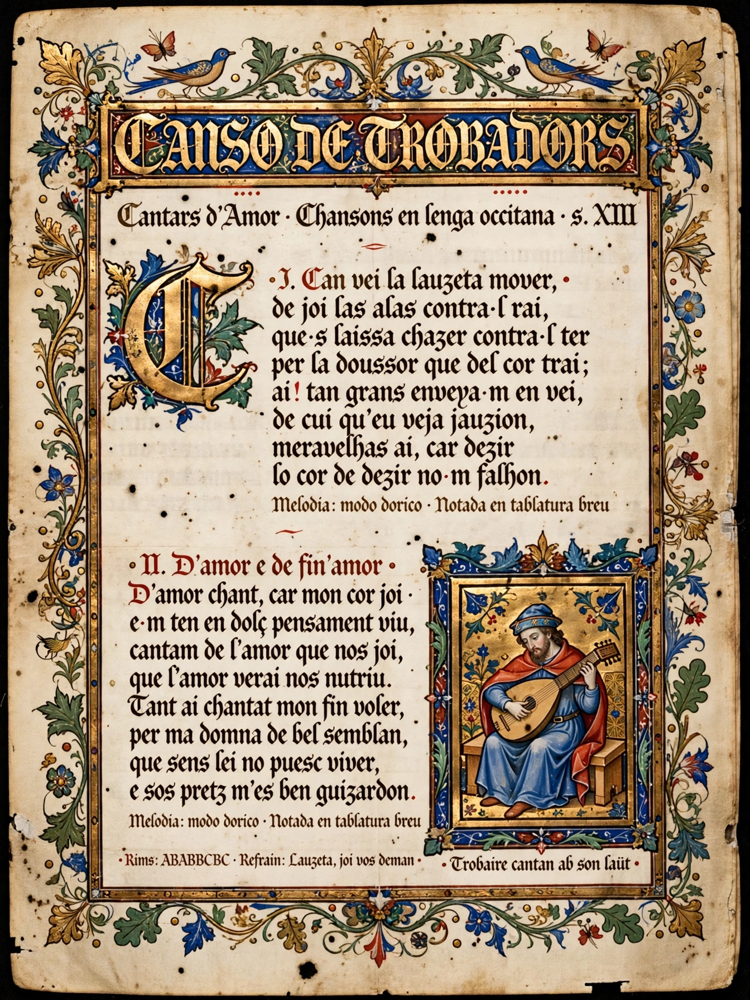

Occitan literature is the body of literature written in the Occitan language of southern France and neighbouring areas. Its first flowering, in the 11th and 12th centuries, produced the lyric poetry of the troubadours, which profoundly influenced the development of European poetry, courtly love conventions, and the lyric traditions of Catalan, Galician-Portuguese, and northern Italian verse.
The earliest known troubadour is William IX, Duke of Aquitaine (1071–1126). His successors — including Bernart de Ventadorn, Arnaut Daniel, and the female troubadours known as trobairitz, such as the Comtessa de Dia — developed intricate forms: the canso (love song), the sirventes (satirical or political poem), the tenso (debate), and the alba (dawn song). Dante praised Arnaut Daniel as the supreme craftsman of the vernacular.
The Albigensian Crusade (1209–1229) devastated the courts that patronized Occitan verse, and the language gradually lost ground to French in administration and letters. A major revival came in the 19th century with the Félibrige movement, led by Frédéric Mistral, whose epic poem Mirèio (1859) helped win him the Nobel Prize in Literature in 1904. Occitan writing continues today with poets and novelists maintaining the literary language.
See also: Troubadour, Occitan language, Frédéric Mistral, Félibrige.